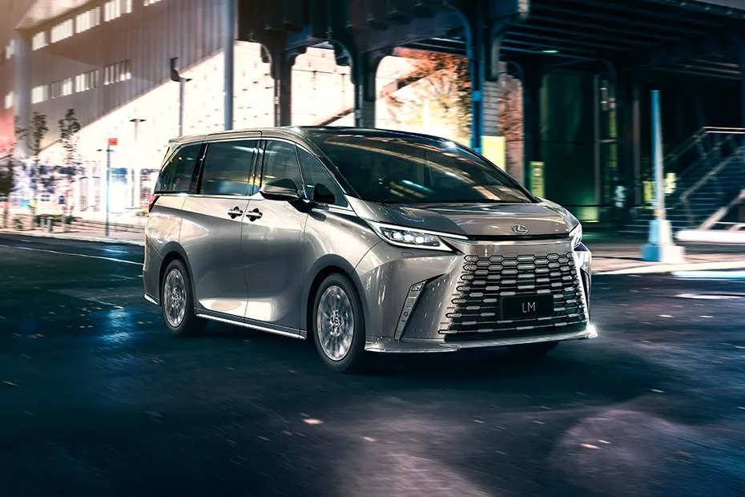

The Lexus LM is a luxury minivan introduced by Lexus, Toyota's premium brand. Designed with a focus on comfort and opulence, it offers a high-end, spacious interior with advanced features.
The LM features a sleek, refined exterior design, a plush and customizable cabin with options for high-quality materials and advanced entertainment systems, and a smooth, quiet ride. It caters to those seeking a blend of luxury and practicality in a minivan format.
Key Features and Details
Interior Luxury
- It comes equipped with state-of-the-art technology, including a sophisticated infotainment system with a large touchscreen display, premium audio systems, and advanced driver assistance features. Connectivity options like Bluetooth, Apple CarPlay, and Android Auto are usually included.
Technology
- The exterior of the Maybach Haute Voiture is characterized by its unique, bespoke paint finishes that often feature two-tone color schemes. Special attention is given to the selection of materials and finishes to ensure that the vehicle stands out as a piece of art on wheels.
Comfort and Convenience
- The LM focuses on passenger comfort with features such as noise reduction technology, multi-zone climate control, and customizable seating arrangements. Some versions offer features like built-in refrigerators and entertainment systems for added luxury.
Design
- The exterior design of the LM is sleek and modern, with a distinctive Lexus grille and aerodynamic lines. It combines the practicality of a minivan with the elegance of a luxury vehicle.
Performance
- While performance is not the primary focus, the LM typically offers a smooth and comfortable ride with a well-tuned suspension system. It usually comes with a choice of efficient powertrains, including hybrid options.
Market Position
- The Lexus LM is positioned as a luxury alternative to more traditional minivans, targeting consumers who desire both high-end features and the practicality of a larger vehicle. It's especially popular in markets like Asia, where luxury minivans are in higher demand.
Target Audience
- Overall, the Lexus LM stands out in the minivan segment by providing a luxurious experience typically found in higher-end sedans and SUVs.
| Lexus LM |
| Top Speed |
180 kmph |
| Secondary Fuel Type |
Electric |
| Fuel Type |
Petrol |
| Engine Displacement |
2487 cc |
| Max Power |
190.42bhp@6000rpm |
| Max Torque |
242Nm@4300 – 4500rpm |
| Transmission Type |
Automatic |
| Fuel Tank Capacity |
60 Litres |